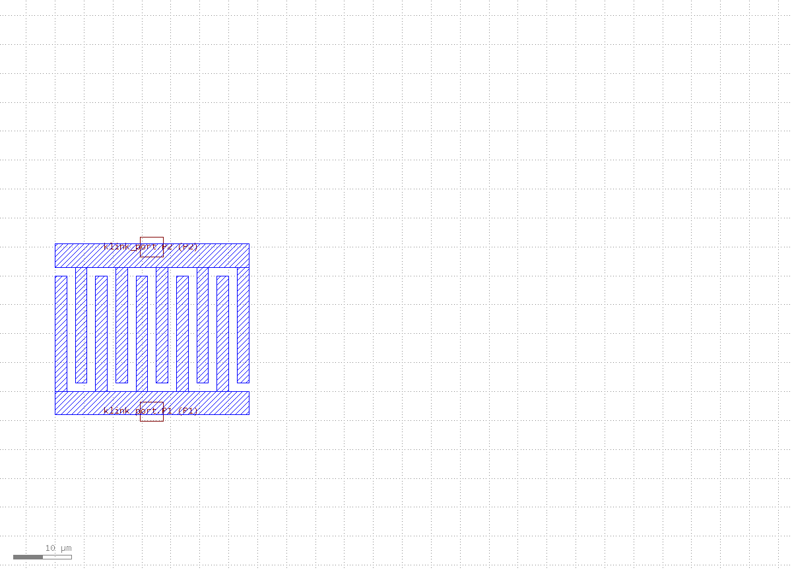
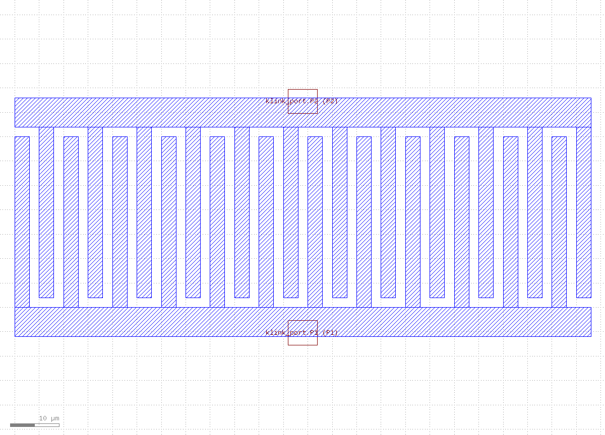
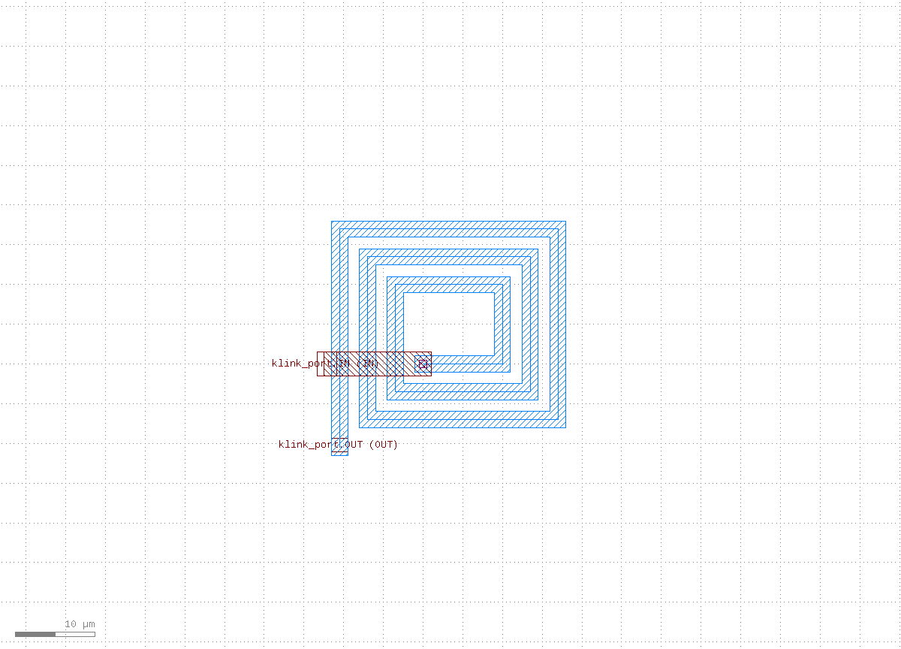
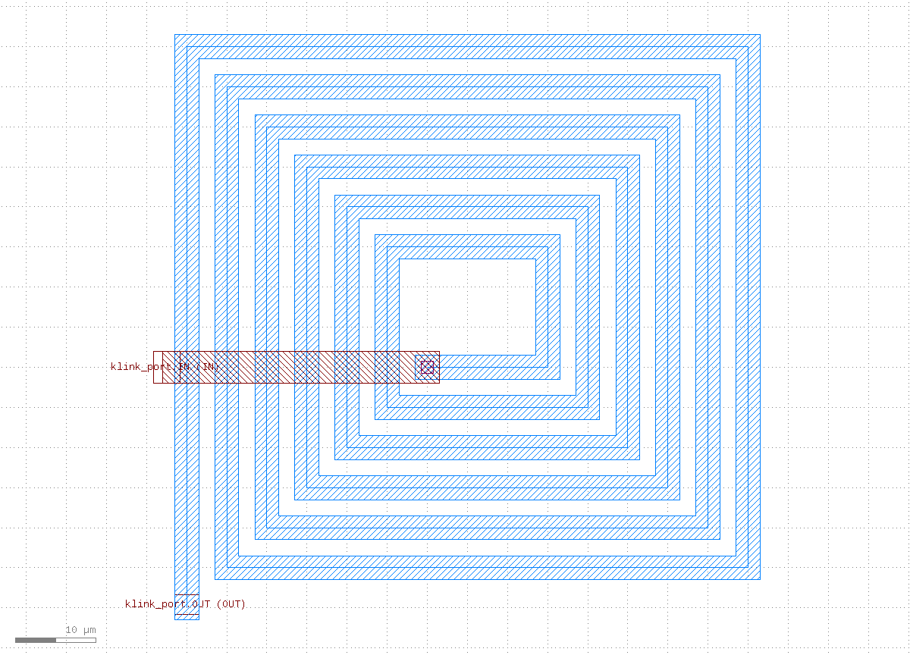
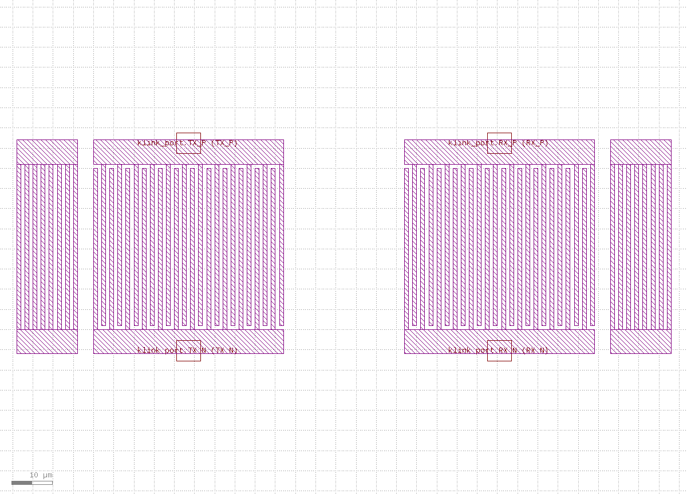
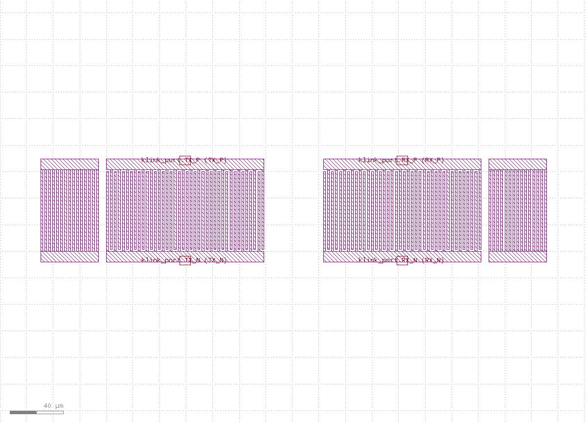
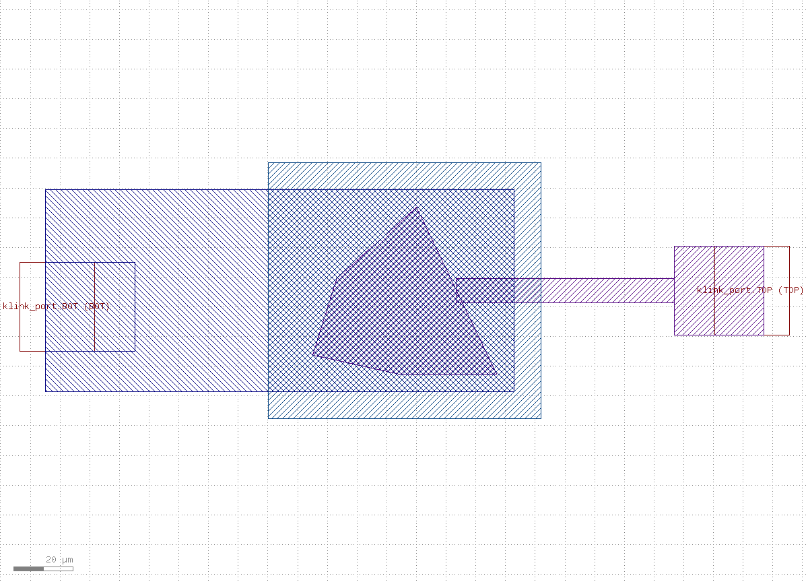
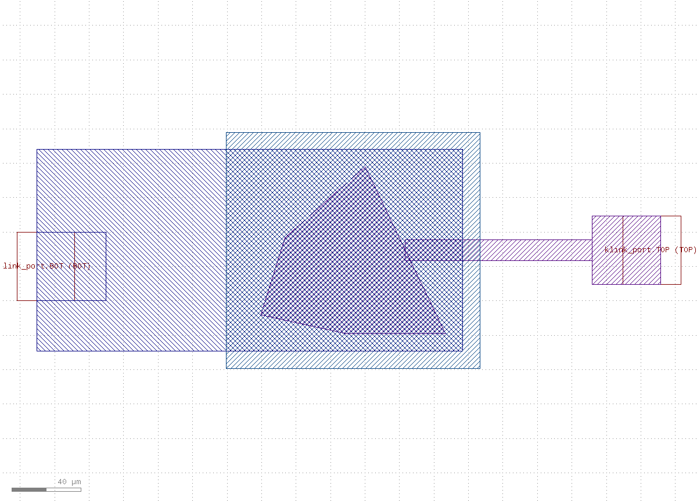
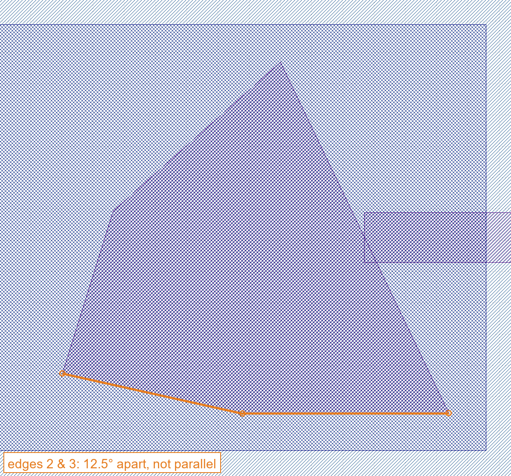

Prerequisites
- Install klink:
pip install klayout-klink(one command installs klink and its Rust kernels, no third-party scientific libraries needed). - KLayout is running with the klink plugin loaded.
- After
klink init:python example_template/passives/<name>.pyruns offline and writes a GDS undertest_outputs/, printing a structured self-check summary; add--live --port <session-port>to push to a KLayout session instead (a repo clone can also run the same code as a module,python -m examples_klink.public.passives.<name>, with identical flags).
build_*() function with two different parameter sets -- the variant parameters are exactly the "expanded" case already exercised by tests/unit/test_passive_templates.py, so the two screenshots are the same contract seen at a larger scale. The "Where are the Ports + self-check numbers" note at the end of each section is genuinely recomputed by this tutorial's own capture run (via the template's own write_offline() self-check), not copied from any implementation report.1IDC capacitor
Two opposing bus bars (bottom bus / top bus) with fingers in between, alternating ownership left-to-right: each finger's width is finger_width, and the spacing between adjacent fingers (which doubles as the finger-to-opposite-bus clearance) is gap, so the finger pitch is finger_width + gap. Single metal layer.
| Param | Meaning | Default |
|---|---|---|
finger_count | total finger count (>=2, alternates bus ownership) | 10 |
finger_length | length of each finger from its own bus | 20.0 µm |
finger_width | finger width (also sets pitch = width + gap) | 2.0 µm |
gap | finger-to-finger AND finger-to-opposite-bus clearance | 1.5 µm |
bus_width | bus bar thickness | 4.0 µm |
python example_template/passives/idc_capacitor.py --live --port <session-port>

finger_count 10→24, plus finger_width 2.0→3.0, gap 1.5→2.0, finger_length 20.0→35.0, bus_width 4.0→6.0 (matches the unit tests' expanded-parameter case).Where are the Ports: P1 at the bottom bus's outer-edge midpoint (this run: center_um=[16.75, -4.0], orientation 270°), P2 at the top bus's outer-edge midpoint ([16.75, 25.5], orientation 90°), both on layer 10/0. Self-check numbers (this run): with default params, merged-region count 2 (no_short=true -- neither bus's finger network shorts to the other), total metal area 668.0 µm²; with the variant params, still 2 merged regions and no_short=true, total metal area up to 3936.0 µm².
Geometry template, not a validated electrical design -- tune the numbers for your own process and verify capacitance with your own models.
2Square spiral inductor
A square spiral wound outward on the top metal, starting from an inner opening of side inner_size, with each turn's side growing by one pitch (track_width + spacing). The coil's own inner end is trapped inside the winding and can't be routed directly: a via drops from a small pad at the inner end straight down to an underpass strip on metal_under that runs out past the coil's outline, surfacing as the IN port; OUT is simply the coil's outer end on the top metal.
| Param | Meaning | Default |
|---|---|---|
turns | number of turns (>=1) | 3 |
track_width | spiral track width | 2.0 µm |
spacing | gap between adjacent turns (pitch = track_width + spacing) | 1.5 µm |
inner_size | side of the inner opening square (first segment length) | 10.0 µm |
underpass_width | width of the underpass strip | 3.0 µm |
python example_template/passives/spiral_inductor.py --live --port <session-port>

turns 3→6, plus track_width 2.0→3.0, spacing 1.5→2.0, inner_size 10.0→15.0, underpass_width 3.0→4.0 (matches the unit tests' expanded-parameter case).Where are the Ports: OUT at the coil's outer end on the top metal (this run: center_um=[-10.5, -10.5], orientation 270°, layer 11/0), IN at the underpass's outer end ([-12.5, 0.0], orientation 180°, layer 12/0). Self-check numbers (this run): with default params, exactly 1 merged region on each metal layer (no_self_short=true -- the winding is one continuous track), the underpass crosses 4 spiral segments (>= turns=3), and the via lands fully inside both the inner-end pad and the underpass (via_in_pad / via_in_underpass both true); with the variant params, still 1 merged region per layer, crossing count up to 7 (>= turns=6), same via checks pass.
Geometry template, not a validated electrical design -- tune the numbers for your own process and verify inductance/Q with your own models.
3SAW IDT filter
Two identical interdigital transducers (TX, RX) facing each other along the acoustic axis, with optional shorted-grating reflectors outside each. Each IDT is electrically the same comb structure as the IDC template (two buses + alternating fingers): electrode width = pitch/4 (metallization ratio 0.5, so the finger-to-finger gap is also pitch/4), overlapping over a length of aperture (apodization is NOT modeled in this version -- uniform overlap, a future knob). Single metal layer.
| Param | Meaning | Default |
|---|---|---|
pitch | electrode period (electrode width = pitch/4) | 4.0 µm |
pairs | finger pairs per IDT (total fingers = 2×pairs) | 12 |
aperture | finger overlap length (acoustic aperture) | 40.0 µm |
bus_width | bus bar thickness | 6.0 µm |
idt_gap | edge-to-edge distance between the two IDTs along the acoustic axis | 30.0 µm |
reflector_fingers | reflector finger count per grating (0 disables) | 8 |
reflector_gap | edge-to-edge distance from an IDT to its reflector | 4.0 µm |
python example_template/passives/saw_idt_filter.py --live --port <session-port>

pitch 4.0→6.0, plus pairs 12→20, aperture 40.0→60.0, bus_width 6.0→8.0, idt_gap 30.0→45.0, reflector_fingers 8→15, reflector_gap 4.0→6.0 (matches the unit tests' expanded-parameter case).Where are the Ports: 4 electrical ports, each at its own bus's outer-edge midpoint, facing outward, all on layer 14/0 -- this run: TX_N=[23.5, -6.0] (270°), TX_P=[23.5, 47.0] (90°), RX_N=[100.5, -6.0] (270°), RX_P=[100.5, 47.0] (90°). Self-check numbers (this run): with default params, each IDT (clipped to its own x-range) has exactly 2 merged regions (no finger short), each reflector grating exactly 1 merged region (a shorted grating should be one continuous piece), electrode width 1.0 µm (= pitch/4); with the variant params, still 2 per IDT and 1 per grating, electrode width up to 1.5 µm (= 6.0/4).
Geometry template, not a validated acoustic design -- we make NO frequency or material claims; the real SAW response depends on the piezo substrate cut/orientation, which this plan-view template does not model at all. Tune the numbers for your own process and verify with your own acoustic simulation.
4BAW / FBAR plan view
A plan-view template for a membrane-type resonator: top_electrode is an irregular pentagon with no two edges parallel (the spurious-mode apodization convention some FBAR designs use), generated from a fixed, deterministic, seedless vertex recipe and uniformly scaled to hit the target active_area_um2; bottom_electrode is a rectangle that covers the pentagon's bounding box and extends further out (opposite the top connection) to its own pad -- so the top/bottom overlap area is effectively the whole pentagon; top_connect runs from the pentagon's most eastward edge to a probe pad, and bottom_connect is simply the bottom electrode's own westward extension. A descriptive StackSpec instance documents the intended vertical stack (top electrode / piezo / bottom electrode) as data -- illustrative only, this is a plan view with no film cross-section drawn.
| Param | Meaning | Default |
|---|---|---|
active_area_um2 | target pentagon (active membrane) area | 2000.0 µm² |
connect_width_um | width of the top/bottom connect strips | 8.0 µm |
pad_size_um | side of the square probe pads | 30.0 µm |
bottom_extension_um | how far the bottom electrode reaches past the pentagon opposite the top connection | 60.0 µm |
overlap_margin_um | margin the bottom electrode adds around the pentagon's bbox on the other three sides | 6.0 µm |
membrane_margin_um | margin of the optional membrane_release documentation layer | 15.0 µm |
python example_template/passives/baw_fbar_planview.py --live --port <session-port>
membrane_release documentation layer traces the pentagon's own outline — the true resonant shape stays visible through that outline even though the fill is covered.
active_area_um2 2000.0→6000.0, plus connect_width_um 8.0→12.0, pad_size_um 30.0→40.0, bottom_extension_um 60.0→90.0, overlap_margin_um 6.0→10.0, membrane_margin_um 15.0→20.0 (matches the unit tests' expanded-parameter case; default and variant share one zoom box, so the size increase is directly visible).No two edges parallel is this template's core invariant, and it's hard to eyeball on the full overview -- here's a zoomed, annotated crop of the default pentagon's closest-to-parallel edge pair, which is still not parallel:

Where are the Ports: TOP at the top-connect probe pad (this run: center_um=[116.9, 5.44], orientation 0°, layer 15/0), BOT at the bottom electrode's own pad ([-124.85, 0.0], orientation 180°, layer 16/0). Self-check numbers (this run): with default params, top and bottom electrodes each have exactly 1 merged region, no two edges parallel is true, pentagon area 1999.996 µm² (target 2000, 0% error), top/bottom overlap is 100% of the pentagon area; with the variant params, still 1 merged region each, not-parallel still true, area 5999.991 µm² (target 6000, within 1%), overlap still 100%.
Geometry template, not a validated acoustic design -- we make NO frequency or material claims; this is a plan view only, no film cross-section or piezo-layer geometry drawn. Tune the numbers for your own process and verify resonance with your own acoustic simulation.
Next steps
Copy one of these template files, adapt the layers/parameters for your own process, run it with --live and confirm the self-check reports ok=true -- then its klink Ports are ready to feed straight into the routing backends (see MCP Reference · Ports). For the full geometry-first loop (draw geometry → mark Port/Anchor → route → verify), continue with the Hall bar tutorial; the text version of all four families' commands and real numbers lives in the demos.md entry linked from the examples gallery.